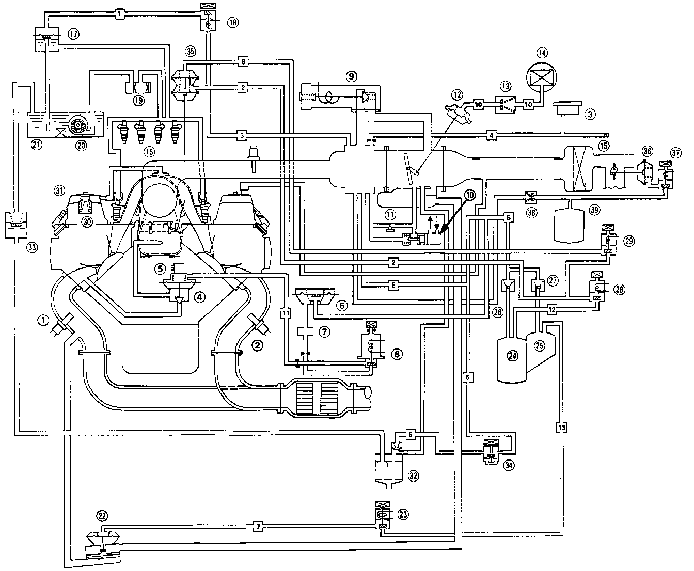

Schematic

(1) FRONT OXYGEN (02) SENSOR
(2) REAR OXYGEN (02) SENSOR
(3) MANIFOLD ABSOLUTE PRESSURE (MAP) SENSOR
(4) EGR VALVE
(5) EGR VALVE LIFT SENSOR
(6) CONSTANT VACUUM CONTROL (CVC) VALVE
(7) AIR CHAMBER
(8) EGR CONTROL SOLENOID VALVE
(9) ELECTRONIC AIR CONTROL VALVE (EACV)
(10) FAST IDLE VALVE
(11) IDLE ADJUSTING SCREW
(12) DASHPOT DIAPHRAGM
(13) DASH POT CHECK VALVE
(14) AIR FILTER
(15) AIR CLEANER
(16) FUEL INJECTOR
(17) PRESSURE REGULATOR
(18) PRESSURE REGULATOR CUT-OFF SOLENOID VALVE
(19) FUEL FILTER
(20) FUEL PUMP
(21) FUEL TANK
(22) AIR SUCTION VALVE
(23) AIR SUCTION CONTROL SOLENOID VALVE
(24) VACUUM TANK A
(25) VACUUM TANK B
(26) CHECK VALVE A
(27) CHECK VALVE B
(28) BYPASS CONTROL SOLENOID VALVE A
(29) BYPASS CONTROL SOLENOID VALVE B
(30) PCV VALVE
(31) BREATHER CHAMBER
(32) CHARCOAL CANISTER
(33) TWO-WAY VALVE
(34) THERMOVALVE
(35) BYPASS CONTROL DIAPHRAGM
(36) VACUUM CONTROL DIAPHRAGM
(37) RESONATOR CONTROL SOLENOID VALVE
(38) CHECK VALVE C
(39) SURGE TANK